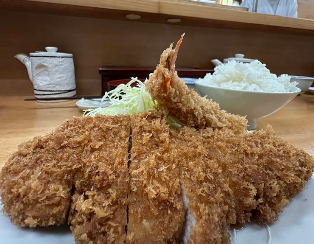

第一天 (2025/07/24)
第一天 (2025/07/24)

臺北松山機場 (TSA)
16:50起飛。

東京國際機場(羽田機場) (HND)
20:50抵達。
第二天 - 築地銀座 (2025/07/25)
查看第二天地圖清單


第三天 - 淺草 (2025/07/26)
查看第三天地圖清單


第四天 - 上野 (2025/07/27)

上野東照宮
拍照、散步。
上野恩賜公園
拍照、散步。

國立科學博物館
要買門票。


一頭牛燒肉 房家
要預約，吃商業午餐。

炸豬排 山家 御徒町店
便宜豬排飯。

上野阿美橫町
逛街。

二木菓子 第一營業所
買零食。
TAKEYA 1（多慶屋 食品・生活館）
購物，有22%折價。
第五天 - 龜有 (2025/07/28)
查看第五天地圖清單


第六天 - 台場 (2025/07/29)
查看第六天地圖清單


第七天 (2025/07/30)


第八天 (2025/07/31)
東京國際機場(羽田機場) (HND)
13:20起飛，10:20前到機場。
臺北松山機場 (TSA)
15:50抵達。